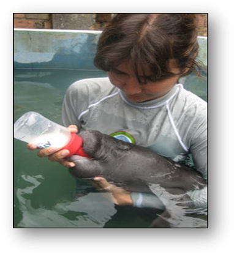
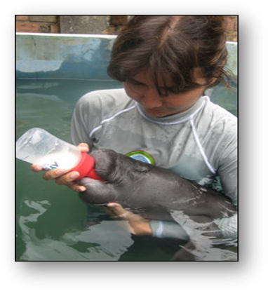

IntroducciónEl Manatí fue un animal marino, que se adaptó al agua dulce para.... |

Manaties en ColombiaDos especies de manatíes se ecuentran en colombia... |

Manatí del caribeEl Manatí del Caribe (Trichechus Manatus) también conocido como... |

Crias y reproducciónEl manatí es mamífero... |

Esperanza de vida, mortandad y poblaciónSu expectativa de vida puede llegar a los 60 años... |

Habitat y distribuciónSe encuentran en ríos lentos, bahías de agua salada, canales y zonas costeras... |

Habitat y distribución en nuestra región
|

AfectaciónLas principales amenazas de esta especie.. |

Preservación y rescate
|


 Son los únicos mamíferos, marinos y herbívoros que habitan en agua dulce.
Son los únicos mamíferos, marinos y herbívoros que habitan en agua dulce.


 
